Introdução
Olá, jovem Padawan! Seja muito bem-vindo(a) ao Tutorial de Arduino Básico para Makers, uma jornada com 10 missões preparadas para iniciar você no universo da programação com Arduino.
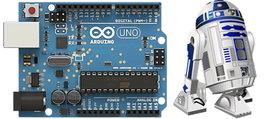
Neste tutorial, você vai aprender a programar com Arduino de forma prática e divertida, criando projetos que acendem LEDs, leem sensores, tocam buzzers e muito mais. Enquanto coloca a mão na massa, você desenvolve sua lógica de programação e se familiariza com o universo da eletrônica.
Mesmo que você nunca tenha programado antes, não tem problema. Vamos começar do zero e avançar com calma, com exemplos práticos, explicações claras e foco total no aprendizado. Afinal, até o jovem padawan precisa dar seu primeiro passo na trilha da Força... digo, da programação.
Para facilitar o seu progresso, cada aula será organizada em blocos temáticos que ajudam a visualizar melhor o conteúdo:
- 🛰️ Plano da missão
- 🔋 Componentes da missão
- 🧠 Comando Central
- 🤖 Códigos da Força
- 🔧 Oficina da Rebelião
- ⚔️ Desafio do Padawan
Apresenta de forma rápida o que você vai aprender na aula. Uma prévia do que vem por aí, como olhar para o holograma da missão.
Mostra os componentes eletrônicos usados no projeto, como LEDs, resistores, sensores e botões. Seu arsenal Jedi para construir circuitos.
Entenda como o Arduino vai controlar cada parte da missão.
Apresenta os conceitos do código, como comandos, variáveis e estruturas de controle. Aqui você aprende a pensar como o Arduino pensa, quase como se estivesse entrando na mente de um droide.
Hora de colocar a mão na massa! Monte o circuito, escreva o código e veja tudo ganhar vida. Que a Força da protoboard esteja com você.
Uma missão extra para você aplicar o que aprendeu e provar que está pronto para avançar na Ordem dos Programadores Jedi.
⚠️ Nem todas as aulas terão todos esses blocos, mas sempre vamos focar no que importa para sua jornada no Lado Luminoso da Programação.
💫 Mas antes de empunhar o sabre de luz da programação, todo Padawan precisa conhecer o caminho do Lado Luminoso do Código. Leia o Contrato Jedi de Bom Uso do ChatGPT na Programação, um guia divertido para lembrar que a Força da IA deve ser usada com sabedoria.
Baixar contrato Jedi ⬇️
Prepare seu computador, sua plaquinha Arduino e o famoso cabo USB (aquele que sempre some quando a gente mais precisa). Está tudo pronto? Então vamos começar!
Missão 1 – Iniciando a Força: O LED desperta
🛰️ Plano da missão
Chegou a hora de dar o primeiro passo no mundo do Arduino! 😄
Nesta aula, você vai conhecer de perto o Arduino, uma plataforma de prototipagem eletrônica que é simples, acessível e, ao mesmo tempo, poderosa o bastante para dar vida a ideias incríveis.
Vamos explorar a placa Arduino UNO, entender suas funções básicas, conhecer os principais componentes eletrônicos e montar nosso primeiro circuito. Spoiler: hoje o LED vai piscar! E com esse simples piscar, você entra oficialmente para o clube de quem faz a eletrônica obedecer.
Prepare a bancada, ajeite os fios e bora transformar teoria em ação.
O que é Arduino?
Arduino é uma plataforma de prototipagem eletrônica de hardware e software livre, ou seja, você pode criar seus próprios projetos de forma simples, prática e com baixo custo. Ele é ideal para quem está começando, mas também é poderoso o suficiente para projetos mais avançados.
As placas Arduino podem ser fabricadas artesanalmente ou compradas prontas. O software usado para programá-las é gratuito e está disponível para download.
O que dá pra fazer com o Arduino?
Aqui vai um spoiler: quase tudo! 😄 Com o Arduino, você pode desenvolver projetos de automação residencial, robótica, Internet das Coisas (IoT), e até projetos criativos como brinquedos, instrumentos musicais, instalações artísticas e muito mais.
Quer ir mais longe? Há projetos incríveis com impressoras 3D, drones e até satélites feitos com base no Arduino. As possibilidades são praticamente infinitas!
Arduino UNO R3
Entre os diversos modelos de placas Arduino, o UNO R3 se destaca por ser o mais utilizado, o mais bem documentado e o mais indicado para quem está começando. Até os simuladores o preferem!
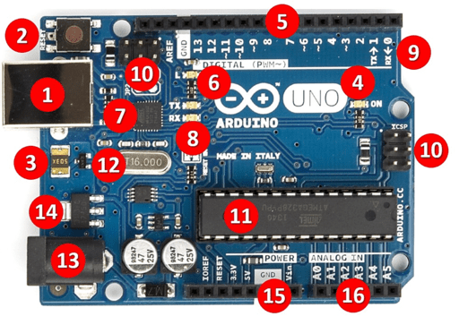
- Conector USB (alimentação externa e comunicação serial)
- Botão de reset da placa Arduino
- Polyfuse (proteção da porta USB do computador contra curtos e sobrecargas).
- LED indicativo que a placa está ligada
- Pinos de entrada e saída digital (~ podem ser usados com PWM)
- LED embutido ligado ao pino 13 (LED_BUILTIN)
- ATmega 16U2 (conversor USB/serial)
- LED TX (transmissor) e RX (receptor) - comunicação serial
- Pinos 0 e 1 (também podem ser usados para comunicação com um módulo bluetooth)
- Porta ICSP (programação direta via protocolo serial)
- Microcontrolador ATmega 328P
- Cristal de quartzo 16 Mhz (clock)
- Conector fêmea 2.1 mm com centro positivo (alimentação externa: 7 a 12 V)
- Regulador de tensão (5V)
- Pinos de tensão e GND
- Entradas analógicas
Software Arduino
https://arduino.cc/en/software ↗️O software arduino, também conhecido como Arduino IDE é gratuito e funciona com qualquer modelo de placa da plataforma Arduino. Para começar, você vai precisar de três itens: um computador, a placa Arduino e um cabo USB para conectar os dois. Com isso, já é possível escrever, enviar e testar seus primeiros programas.
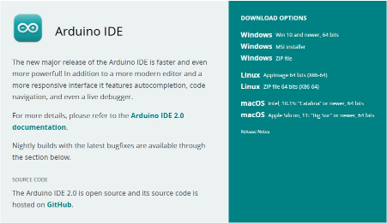
🔋 Componentes da missão
Antes de programar, é importante entender com quem estamos lidando no mundo físico: os componentes eletrônicos. São eles que dão vida aos nossos projetos, controlam a corrente elétrica e fazem a mágica acontecer ou pelo menos, piscarem LEDs! 😄
A Eletrônica é a área da ciência que estuda e utiliza circuitos formados por esses componentes, com o objetivo de representar, armazenar, transmitir ou processar informações. Em outras palavras, ela transforma sinais elétricos em ações, e é assim que controlamos sensores, motores, botões e muito mais.
Mas calma! Não vamos estudar tudo de uma vez. A cada aula, conforme os experimentos forem evoluindo, vamos conhecer novos componentes: resistores, LEDs, botões, sensores e por aí vai. Vamos ver para que servem, como se comportam e como usá-los com segurança e criatividade. Você não precisa decorar nada agora, vamos aprender fazendo, explorando e testando juntos.
Breadboard (protoboard)
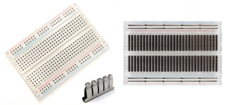
Usada para prototipação de circuitos elétricos, a protoboard é uma placa de ensaios que permite a montagem dos componentes eletrônicos sem uso de solda. Ela é feita por blocos de plástico perfurados e possui internamente várias lâminas que fazem o contato elétrico.
Resistores
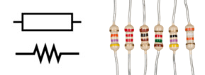
O resistor é um dos componentes mais básicos e também mais importantes da eletrônica. Sua principal função é simples e essencial: limitar a corrente elétrica que passa por um circuito, evitando que outros componentes "tomem um choque de realidade". 😄
A resistência elétrica é medida em ohms (Ω), em homenagem ao físico Georg Ohm (o cara que descobriu que sim, a eletricidade também precisa de limites!). Você vai encontrar resistores de todos os tipos e valores, desde frações de ohm até milhões de ohms (também conhecidos como megaohms). Eles são pequenos, geralmente com listras coloridas no corpo (uma espécie de código secreto que indica o valor da resistência).
Calculadora de resistores (4 faixas)
🎨 Cores → Valor
Faixa 1 | Faixa 2 | Faixa 3 ( multiplicador ) | Faixa 4 ( tolerância )
🔢 Valor → Cores
Valor em ohms (Ω) | Tolerância
LEDs
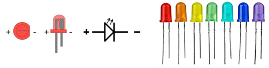
O LED (sigla para Diodo Emissor de Luz) é aquele componente simpático que acende quando tudo está funcionando como deveria. O LED funciona como um diodo especial, que em vez de só conduzir a corrente elétrica em um sentido, também emite luz nesse processo. Mas atenção: o LED tem polaridade, ou seja, não dá pra ligar de qualquer jeito! O terminal menor (ou o lado do chanfro na base) indica o cátodo, que é o lado negativo. Já o terminal maior é o ânodo (lado positivo).
Os LEDs estão por toda parte: em várias cores, formatos e tamanhos. Alguns piscam, outros mudam de cor, e outros são tão potentes que parecem holofotes de show! Mas cuidado! LEDs são sensíveis e não gostam de corrente demais. Se você ligar direto no Arduino sem um resistor para limitar a corrente... bem, digamos que o LED vai brilhar forte e brevemente. 😬
Então, regra de ouro: sempre use um resistor em série com o LED. Assim, você garante luz na medida certa e um circuito saudável.
Qual o resistor ideal para ligar um LED?
A saída digital do Arduino fornece 5V, e a corrente segura para a maioria dos LEDs é 20 mA. Cada cor de LED tem uma queda típica de tensão:
- 🔴 Vermelho: ~2.0V
- 🟢 Verde: ~2.2V
- 🟡 Amarelo: ~2.1V
Usando a famosa Lei de Ohm (V = R × I), podemos calcular o resistor ideal. Mas calma, você não precisa virar um matemático agora! Aqui vai a dica prática:
🔹 Resistor de 220Ω ou 330Ω já está ótimo para a maioria dos casos. Eles garantem segurança tanto para o LED quanto para o Arduino.
🔹 Quer ajustar o brilho? Veja a mágica na prática:
- 150Ω → LED bem brilhante
- 220Ω → Brilho equilibrado
- 330Ω → Brilho mais suave
- 470Ω → LED discreto
⚠️ Evite resistores abaixo de 150Ω — podem forçar o LED e a saída do Arduino.
🧠 Comando Central
No laboratório prático desta aula, o Arduino controla uma saída digital para acender e apagar um LED em intervalos regulares, utilizando os comandos:
digitalWrite(); delay();
Neste experimento, o LED é ligado, permanece aceso por um curto período e, em seguida, desligado por outro intervalo. Esse ciclo se repete continuamente, criando o efeito de "piscar".
Quer entender tudo de forma ainda mais clara? Dá o play no vídeo e veja tudo funcionando na prática!
🔧 Oficina da Rebelião
Objetivo: Desenvolver um simples circuito para fazer o LED piscar.
Lista de material:
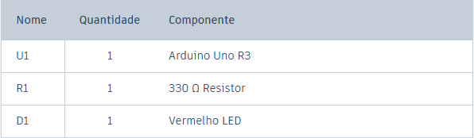
Diagrama elétrico:
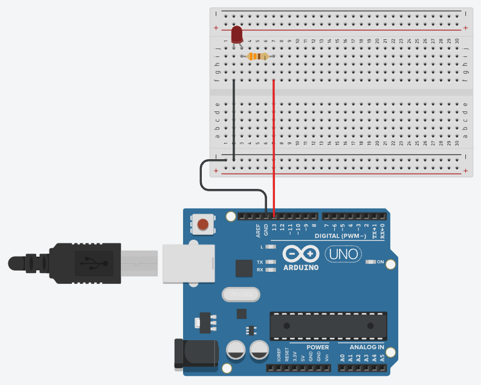
Código fonte:
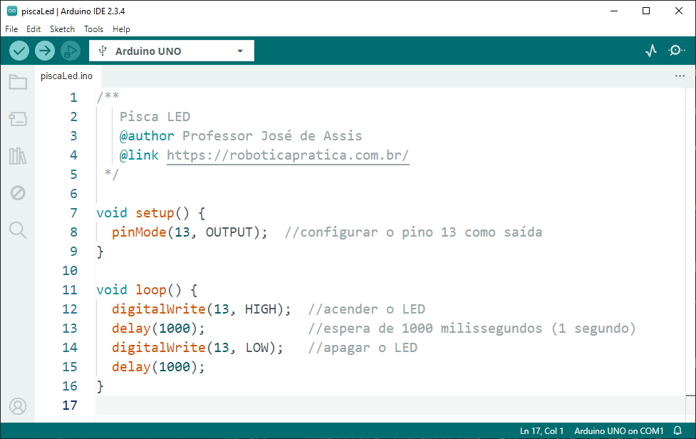
⚔️ Desafio do Padawan
Semáforo simples
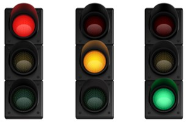
Você já dominou o piscar de um único LED, mas controlar o tráfego em uma galáxia tão movimentada exige mais! Neste desafio, vamos coordenar três LEDs para simular um semáforo simples (tecnologia essencial em qualquer cruzamento interplanetário).
Objetivo:
Simular um semáforo com três LEDs: vermelho, amarelo e verde.
Funcionamento:
- Acende o LED verde por alguns segundos (sinal aberto).
- Em seguida, acende o LED amarelo por menos tempo (atenção).
- Depois, acende o LED vermelho por alguns segundos (pare).
- E então tudo se repete em loop.
Dicas
- Use digitalWrite e delay.
- Organize bem a lógica para que apenas um LED fique aceso por vez.
- Lembre-se do resistor, os LEDs precisam de limites para não explodirem como a Estrela da Morte." 💥
O equilíbrio no tráfego da galáxia está em suas mãos, jovem padawan da programação.
Missão 2 - Código do Mestre: Variáveis e Operadores
🛰️ Plano da missão
Olá, futuro mestre do Arduino! 😄
Se você já fez o LED piscar, parabéns! Agora é hora de dar o próximo passo e começar a programar de verdade.
Nesta aula você vai aprender a exibir o famoso Hello World, usar variáveis, fazer contas simples e dar os primeiros passos na lógica de programação, mas não se preocupe, nada de fórmulas malucas ou matemática assustadora. Aqui a ideia é aprender de forma simples e prática. Vamos lá!
🤖 Códigos da Força
Programar é como ensinar o Arduino a pensar, passo a passo, linha por linha. É tipo uma receita de bolo: primeiro liga o forno (ou o LED), depois mistura os ingredientes (ou os comandos). Só que aqui, nada de farinha no teclado. 😄
Nesta etapa, você vai começar a montar esse raciocínio lógico com os principais ingredientes da programação: algoritmos, variáveis, operadores, estruturas de controle e vetores.
Mas calma, não vamos ver tudo isso de uma vez. Esses conceitos serão apresentados aos poucos, com exemplos práticos, explicações simples e no seu ritmo, sempre com foco em aprender fazendo.
Linguagem de programação
Programar é, basicamente, conversar com a máquina... só que falando a língua dela.
Imagine a linguagem de programação como um idioma criado especialmente para conversar com as máquinas (mas nada de "Oi, tudo bem?"). Aqui, as conversas são cheias de instruções que dizem exatamente o que o computador deve fazer. Cada linguagem tem sua própria gramática, com símbolos e regras que organizam essa conversa de forma que o computador entenda.
Linguagem de máquina (baixo nível)
Essa é a linguagem nativa dos microcontroladores e processadores. Aqui, a conversa é crua, direta e sem rodeios: só zeros e uns (o famoso sistema binário). O processador entende isso como dois níveis de tensão elétrica. Para a gente, parece código alienígena, mas para a máquina, é poesia pura.
Linguagem de alto nível
Agora sim, entramos no mundo dos programadores! As linguagens de alto nível (como C, Python ou Java) são bem mais amigáveis para os humanos. Elas se parecem um pouco mais com frases que conseguimos entender e estão bem distantes daquela sopa de bits da linguagem de máquina. O melhor: você não precisa conhecer os bastidores da CPU (registradores, instruções e outras miudezas ficam escondidinhas). É como dirigir um carro automático: só pisa e vai!
Compilar
Compilar é como contratar um tradutor juramentado entre você e a máquina. O programa que você escreveu em uma linguagem compreensível é traduzido para linguagem de máquina, pronta para ser executada direto no microcontrolador. Sem compilar, a máquina fica olhando pro código igual você olha pra uma receita de bolo em japonês!
Linguagens de programação para microcontroladores e sistemas embarcados
Quando falamos em programar sistemas embarcados (como placas Arduino, microcontroladores e dispositivos inteligentes) devemos usar linguagens capazes de lidar com recursos limitados e tempo real, usamos linguagens bem conhecidas, como:
- Assembly (para quem gosta de emoção)
- C/C++ (as estrelas dos microcontroladores)
- Python (aparece na lista, mas seu negócio mesmo é outro)
- Java (sim, ela insiste em participar também 😅)
Linguagem de Programação Arduino
A linguagem do Arduino é baseada em C/C++ e possui uma estrutura simples, feita sob medida para aprender e criar projetos na prática. Os principais elementos da linguagem são:
- Sketch (o seu programa)
- Variáveis (para guardar informações)
- Operadores (para fazer contas e comparações)
- Estruturas de controle (para tomar decisões)
- Funções (para organização e reutilização do código)
🔧 Oficina da Rebelião
Agora é com você! Assista aos dois vídeos abaixo e acompanhe tudo na prática. Pegue seu Arduino, abra a IDE e bora colocar o conhecimento pra funcionar.
Hello World
Vamos começar com o clássico “Hello World”, um verdadeiro rito de passagem para todo programador. 😄
Variáveis e operadores aritméticos na prática
Vamos agora explorar um dos fundamentos mais importantes da programação: o uso de variáveis e operadores aritméticos. É com eles que você começa a dar inteligência ao seu projeto!
Missão 3 - Botão da escolha: Use o if com sabedoria
🛰️ Plano da missão
Já piscou, já somou... agora é hora de decidir!
Se você já exibiu o “Hello World” e entendeu como funcionam variáveis e contas simples, agora é hora de dar um passo importante: tomar decisões com o seu código!
Nesta aula, vamos aprender sobre chaves e botões, como usar os modos pull-down e pull-up, e o famoso "if...else" (o coração da lógica condicional).
E claro, tudo isso com experimentos práticos, como:
- Entender como funcionam os níveis lógicos 0 e 1 nas entradas digitais
- Entender de vez o tal do INPUT_PULLUP
- Ligar e desligar o LED com dois botões
- Fazer o mesmo com apenas um botão
🔋 Componentes da missão
Interruptor de pressão
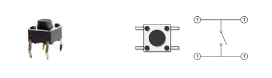
Um interruptor de pressão é um botão utilizado para ativar alguma função. Interruptores de pressão funcionam como um interruptor elétrico e podem ser normalmente fechados ou abertos.
🧠 Comando Central
No laboratório prático desta aula vamos explorar como o Arduino interpreta sinais vindos de botões e interruptores, utilizando os modos pull-down, pull-up e o prático INPUT_PULLUP. Esses conceitos garantem que os comandos sejam lidos de forma estável e confiável, deixando o botão no controle e o Arduino bem comportado. 😄
Pull-down
Aqui o pino é puxado para o GND por padrão, com um resistor.
- Quando o botão não está pressionado, o pino está em 0.
- Quando você pressiona o botão e liga no 5V, ele vai para 1.
É como se disséssemos: "Ei, Arduino, considera isso 0... até alguém apertar o botão!"
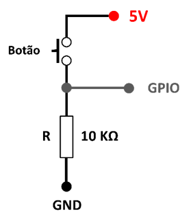
Pull-up
Agora o pino é puxado para o 5V usando um resistor.
- Quando o botão não está pressionado, o pino está em 1.
- Quando você pressiona o botão e liga no GND, ele vai para 0.
É o oposto do pull-down, mas a ideia é a mesma: manter o pino num estado fixo até que o botão diga o contrário.
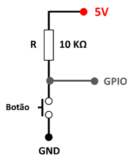
INPUT_PULLUP
Essa é uma mão na roda! É uma função interna do Arduino que ativa automaticamente um resistor pull-up no pino digital, ou seja, você não precisa colocar o resistor na protoboard pois o Arduino já tem um escondido lá dentro. Basta configurar o pino como:
pinMode(pinoBotao, INPUT_PULLUP);
E pronto! O pino fica em 1 por padrão, e vai para 0 quando o botão for pressionado (ligado ao GND).
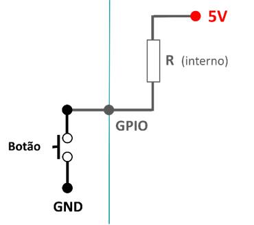
🤖 Códigos da Força
Comando if (se)
O if é usado quando queremos que o Arduino tome uma decisão simples. Ele verifica se uma condição é verdadeira, se for, ele executa o comando que vem em seguida. É como dizer: se isso acontecer, faça isso. 😄
if (condição) {
//condição verdadeira
}
Comando if...else (se... senão)
Com o if...else, o Arduino tem duas opções: se a condição for verdadeira, ele executa um bloco de comandos. Se não for, faz outra coisa no lugar. É como dizer: se o botão foi apertado, acenda o LED, senão, mantenha apagado. Bem direto, como um bom ajudante deve ser!
if (condição) {
//condição verdadeira
} else {
//condição falsa
}
Comando if...else if...else (encadeado)
Às vezes o Arduino se depara com mais de duas possibilidades. Aí entra o encadeamento de condições com else...if. Ele verifica uma por uma, na ordem, até encontrar uma que seja verdadeira. Quando encontra, executa aquela e ignora o resto.
Esse tipo de encadeamento é útil quando temos várias condições diferentes e apenas uma deve ser executada. O Arduino decide com sabedoria, sem entrar em conflito interno. Afinal, equilíbrio é o caminho da programação.
if (condição1) {
//condição1 verdadeira
} else if (condição2) {
//condição2 verdadeira
} else {
//falso
}
🔧 Oficina da Rebelião
Experimento 1: Desenvolver um circuito para ligar e desligar um LED usando dois botões.
Lista de material:
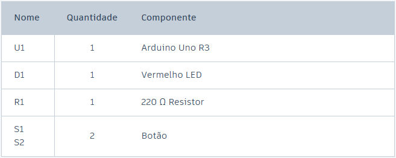
Diagrama elétrico:
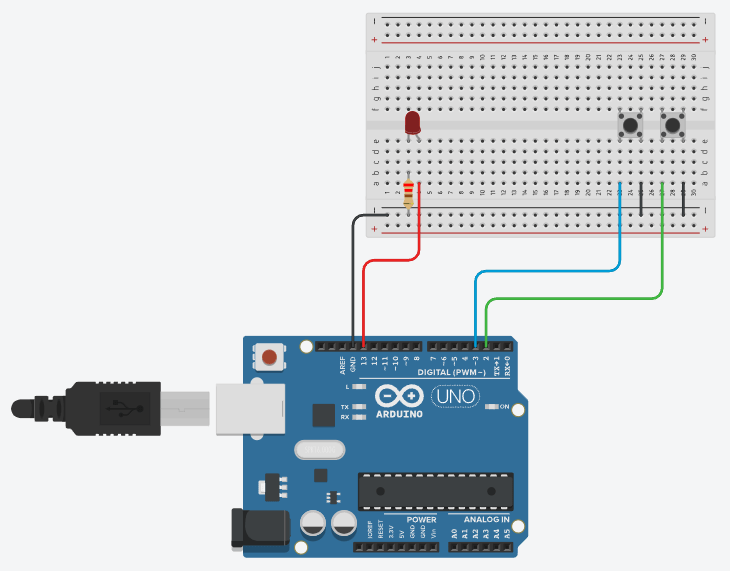
Código fonte:
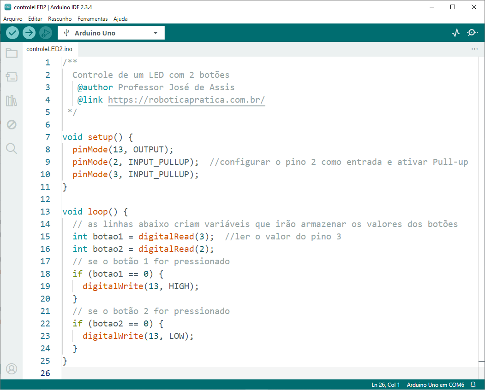
Experimento 2: Desenvolver um circuito para ligar e desligar um LED usando apenas 1 botão. O LED deve acender enquanto o botão estiver sendo pressionado e apagar quando o botão deixar de ser pressionado.
Lista de material:
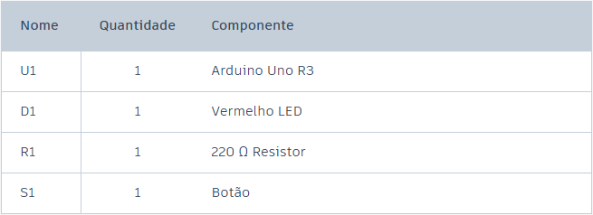
Diagrama elétrico:
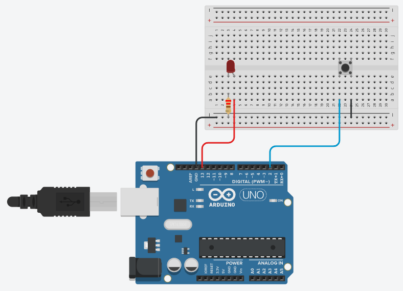
Código fonte:
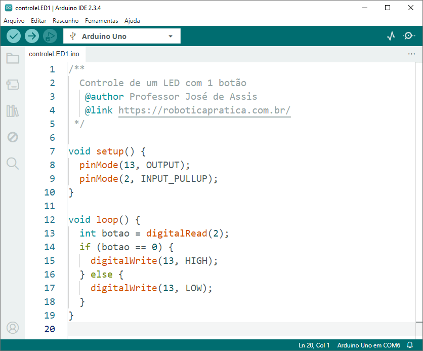
Missão 4 - Sensor Jedi: Luz de Cortesia Analógica
🛰️ Plano da missão
Já fizemos o Arduino piscar LED e tomar decisões com base em botões e variáveis. Mas e quando precisamos lidar com algo que não é só ligado ou desligado? Chegou a hora de conhecer o mundo analógico. 😄
Nesta aula, você vai aprender a usar as entradas analógicas do Arduino, que servem para ler valores que variam continuamente. E o nosso guia nessa jornada será um sensor muito útil (e um pouco tímido): o LDR, que detecta a intensidade da luz ambiente.
Vamos montar uma simulação de uma luz de cortesia que se acende sozinha quando a escuridão toma conta do ambiente, como nos sistemas automatizados das naves da Nova República. É a tecnologia trabalhando a favor do conforto intergaláctico.
Prepare o LDR, o resistor e o LED, porque nesta aula o Arduino vai aprender a sentir o ambiente e reagir como um verdadeiro droide sensorial a serviço da tripulação.
🔋 Componentes da missão
LDR
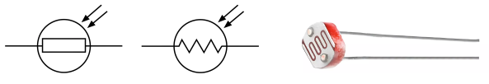
O LDR (Resistor Dependente de Luz) é um tipo de resistor cujo valor de resistência varia conforme a intensidade da luz que incide sobre ele. Quanto mais luz, menor a resistência, quanto menos luz, maior a resistência.
Esse componente é bastante versátil e pode ser encontrado em câmeras, fotômetros, alarmes, sistemas de iluminação pública, sensores de linha e diversos outros dispositivos que precisam reagir à luminosidade do ambiente.
🧠 Comando Central
Sensores como o LDR enviam sinais que variam de acordo com o ambiente, e para ler esses sinais usamos as entradas analógicas do Arduino, de A0 a A5.
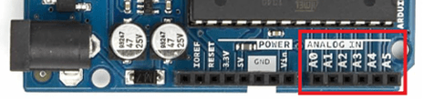
Como essas portas funcionam apenas como entrada analógica, não é necessário definir no setup e para fazer a leitura usamos a função:
analogRead()
Esta função retorna um valor entre 0 e 1023, que representa a tensão elétrica medida no pino. Esses valores vêm de um conversor chamado ADC, que transforma a tensão de 0 a 5 volts em números que o Arduino entende.
Como esse conversor tem uma resolução de 10 bits, ele divide a faixa de 0 a 5V em 1024 partes iguais. Isso significa que 0 corresponde a 0V e 1023 corresponde a 5V. Com base nesses valores, o Arduino pode tomar decisões de forma mais precisa e inteligente.
🔧 Oficina da Rebelião
Objetivo: Desenvolver um projeto que irá identificar a luminosidade do ambiente e se estiver escuro irá acender o LED, senão (ambiente claro) o LED ficará apagado.
Lista de material:
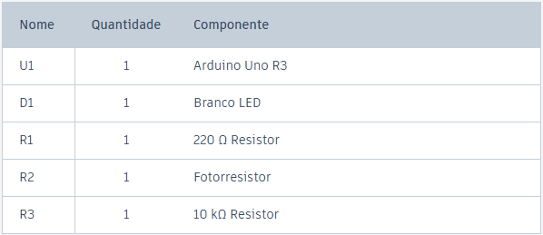
Diagrama elétrico:
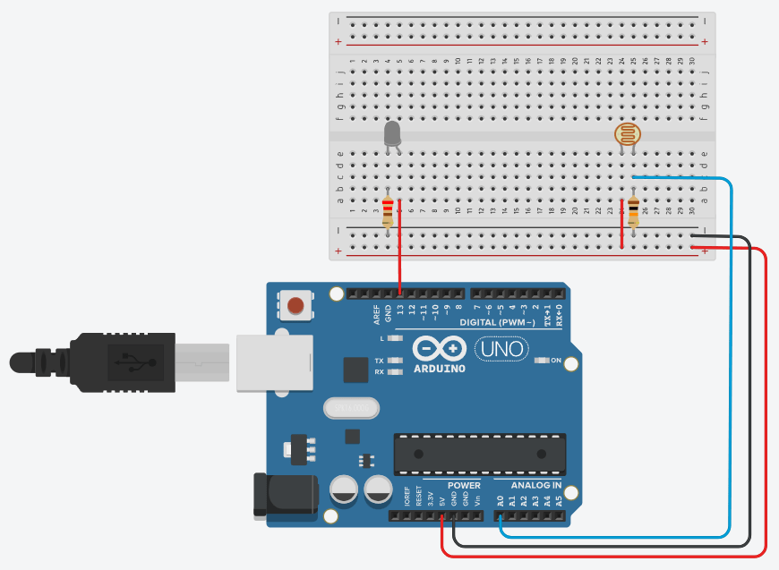
Código fonte:
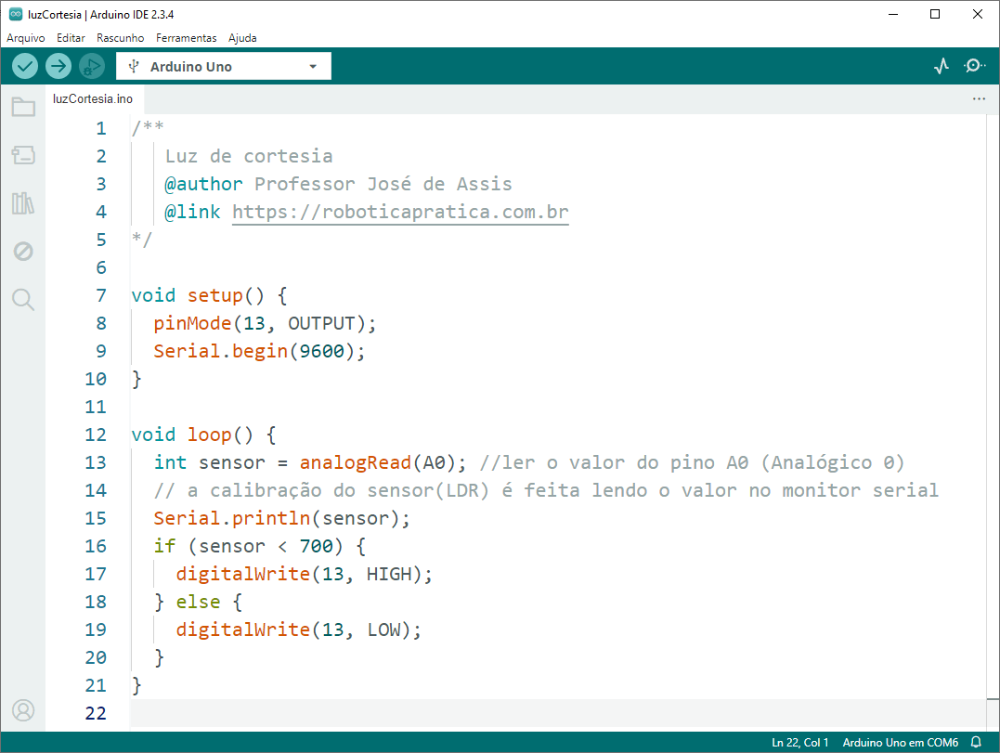
Missão 5 - Lado lógico da Força: AND, OR, NOT
🛰️ Plano da missão
Depois de piscar LEDs, fazer contas e tomar decisões com if...else, chegou a hora de turbinar a lógica do seu código 😄
Nesta aula, você vai conhecer os operadores lógicos AND, OR e NOT, que ajudam o Arduino a tomar decisões um pouco mais sofisticadas. Sabe quando você quer que algo aconteça só se duas condições forem verdadeiras? Ou se pelo menos uma delas for? Ou quando quer inverter tudo só por teimosia? Pois é, o Arduino também sabe fazer isso.
Vamos entender como esses operadores funcionam e aplicar tudo na prática com botões, LEDs e combinações criativas. Parece complicado, mas na verdade é simples, útil e até divertido de testar.
Então prepare os botões, afie a lógica e bora deixar seu Arduino mais esperto!
🤖 Códigos da Força
Operador AND
Imagine dois interruptores ligados em série controlando uma lâmpada. Para que a lâmpada acenda, os dois precisam estar ligados ao mesmo tempo. Se um deles estiver desligado, não tem conversa: a corrente não passa e a luz continua apagada.
Esse é o comportamento do operador AND na lógica digital. Ele só resulta em verdadeiro se ambas as entradas forem verdadeiras. Um único “não” já é suficiente para barrar tudo.
Agora é com você! Use o simulador abaixo para testar os interruptores e descobrir como o operador AND funciona. Mas cuidado... se clicar direto na lâmpada, ela quebra e não acende mais. 😅 Teste com responsabilidade!
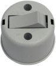

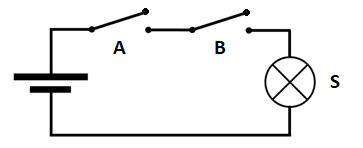
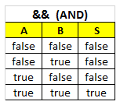
Operador OR
Agora imagine dois interruptores, mas dessa vez ligados em paralelo com a lâmpada. Aqui, a lógica é mais “flexível”: se pelo menos um dos interruptores estiver ligado, a corrente passa e a lâmpada acende.
É assim que funciona o operador OR. Ele só fica desligado quando tudo está desligado. Qualquer entrada verdadeira já é suficiente para iluminar o caminho.
Experimente ligar os interruptores em diferentes combinações e veja quando a lâmpada acende. E claro, se clicar direto na lâmpada... bem, ela ainda quebra 😅
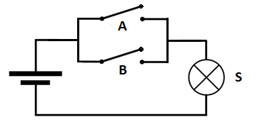
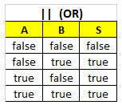
Operador NOT
Esse aqui é o do contra.
O operador NOT inverte o valor da entrada. Se for 1, ele vira 0. Se for 0, vira 1. Simples assim.
Na prática, pense em um único interruptor que desliga a lâmpada quando está ligado e acende quando está desligado. Parece estranho no começo, mas é super útil quando você quer fazer o contrário do que está sendo lido.
Ative o interruptor e veja o que acontece. E sim, a lâmpada continua quebrando se você insistir em clicar nela 😄

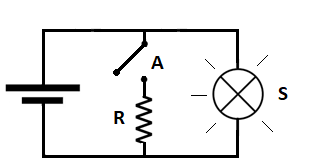

⚔️ Desafio do Padawan
Agora que você já entendeu como funcionam os operadores lógicos AND, OR e NOT, chegou a hora de colocá-los em ação com um desafio cheio de botões, LEDs e lógica digna de um verdadeiro mestre Jedi da programação! 😄
Objetivo:
Montar três mini circuitos simulando no Arduino o funcionamento dos operadores lógicos usando botões e LEDs.
⚠️ Atenção!
Esse desafio é para treinar lógica de programação, não montagem elétrica. Não vale ligar os botões em série ou paralelo como na vida real. A ideia aqui é simular o comportamento dos operadores lógicos usando código, e não atalhos com fios.
Você já tem tudo o que precisa. Agora é só confiar na força da programação e resistir ao lado sombrio... do ChatGPT. Que os LEDs estejam com você. 😎✨
Circuito AND
- Use dois botões ligados a entradas digitais.
- Use um LED como saída.
- O LED só deve acender quando os dois botões forem pressionados ao mesmo tempo.
Circuito OR
- Também com dois botões e um LED.
- O LED deve acender se pelo menos um dos botões estiver pressionado.
- Se os dois estiverem pressionados, também acende!
Circuito NOT
- Use um único botão e um LED.
- O LED deve acender quando o botão estiver solto, e apagar quando o botão for pressionado.
- Parece do contra? É exatamente essa a ideia! 😄
Dicas:
- Os operadores lógicos em C/C++ são:
&& para AND
|| para OR
! para NOT
digitalRead() //para ler os botões
digitalWrite() //para acender os LEDs
if-else (se... senão) para simular os circuitos
exemplo: operador AND
if (condição1 && condição2) {
//condições 1 e 2 verdadeiras
} else {
//somente uma verdadeira ou tudo falso
}
Missão 6 – Laços em Ação: Sequência de LEDs
🛰️ Plano da missão
Já fizemos o Arduino tomar decisões sérias com o if...else. Agora ele vai entrar no modo repetitivo, e dessa vez por vontade própria. 😄
Nesta aula, você vai conhecer os laços de repetição for, while e do...while, que são ótimos para quando queremos repetir comandos sem ficar copiando e colando o mesmo código dez vezes. É tipo ensinar o Arduino a fazer tarefas chatas por você, sem reclamar e com a precisão de um droide.
Vamos colocar tudo isso em prática criando uma sequência de LEDs inspirada na sinalização luminosa de veículos de patrulha galáctica. Aquele efeito estiloso de luzes fluindo em uma direção pode até parecer magia Jedi, mas é pura programação com laços de repetição.
🤖 Códigos da Força
Laços de Repetição (for, while, do...while)
Quando o Arduino percebe que precisa fazer a mesma coisa várias vezes, ele entra no modo repetição. Em vez de copiar e colar o mesmo comando várias vezes, usamos laços (ou loops) para deixar o código mais inteligente e preguiçoso, no bom sentido, claro. 😄
Comando for
O for é ótimo quando já sabemos quantas vezes algo deve acontecer. Ele tem três partes: o ponto de partida (início), a regra de parada (condição) e o ritmo (incremento). É como dizer: comece no zero, vá até cinco e vá pulando de um em um. O Arduino adora essa clareza.
for (início; condição; incremento) {
//repetir enquanto a condição for verdadeira
}
Comando while
O while é o loop que age enquanto a condição for verdadeira. Ele não sabe quando vai parar, só sabe que vai continuar até alguém dizer chega. Se você não mudar a condição dentro dele, prepare-se, o Arduino vai entrar num loop infinito e não sai nem com café. ☕😅
Útil para situações onde a repetição depende de algo externo, como um sensor ou botão
while (condição) {
//repetir enquanto a condição for verdadeira
}
Comando do...while
O do...while é o mais otimista dos laços. Ele acredita que deve agir pelo menos uma vez, mesmo que a condição nem seja verdadeira. Depois, ele verifica se deve continuar.
É tipo: primeiro age, depois pergunta se devia. Ideal para menus ou ações que precisam acontecer ao menos uma vez antes de decidir repetir.
do {
//executar uma vez "mesmo se a condição for falsa"
//verificar a condição e repetir enquanto a condição for verdadeira
} while (condição);
Com esses laços, o Arduino domina a repetição como um Jedi domina a Força… mas cuidado com loops infinitos, eles levam ao lado negro da programação. 👾🧠✨
🔧 Oficina da Rebelião
Objetivo: Desenvolver no Arduino um efeito sequencial de LEDs conforme abaixo:
Lista de material:
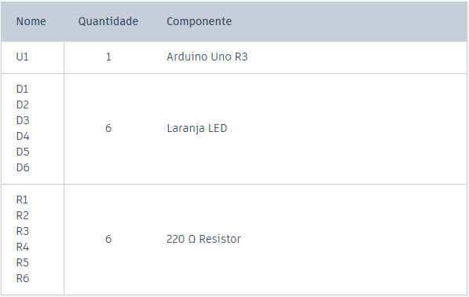
Diagrama elétrico:
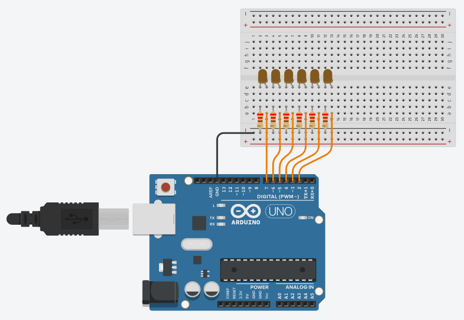
Código fonte:
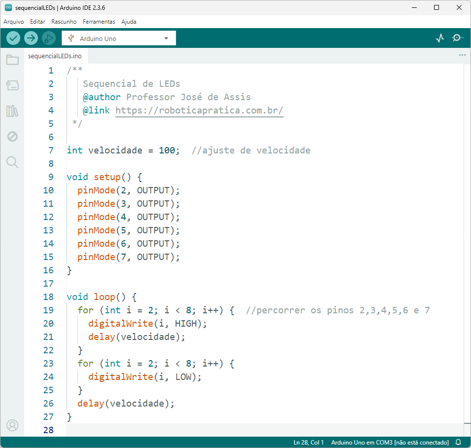
⚔️ Desafio do Padawan
- Você já fez a seta piscar da direita para a esquerda. Agora é hora de inverter a força e fazer ela brilhar da esquerda para a direita. Que a luz esteja com você nessa missão!
- Quer um desafio digno de um mestre Jedi? Crie um efeito de vai e vem com os LEDs, tipo aquela luz que “corre” para um lado e volta para o outro, como nos carros futuristas da ficção ou nos robôs que você já viu em filmes de aventura espacial. Faça as luzes dançarem para frente e para trás com muito estilo!
Missão 7 - Travessia segura para os cidadãos galácticos
⚔️ Desafio do Padawan
Desafio você, jovem padawan da programação, a encarar uma missão digna de um mestre Jedi do Arduino. Sua tarefa é construir um semáforo de pedestres funcional, com botão e tudo, que garante uma travessia segura para qualquer cidadão galáctico.
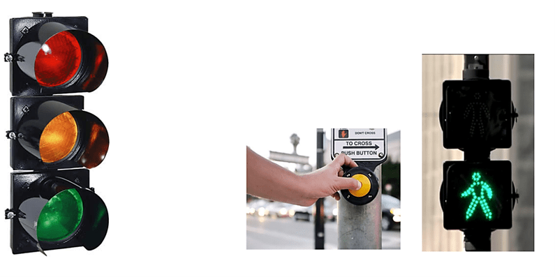
Este desafio é perfeito para colocar em prática tudo o que você aprendeu até agora: botões, condições com if, controle de tempo com delay, laços de repetição com for e lógica de programação.
Agora chegou o momento de combinar esses conhecimentos e criar um semáforo inteligente que ajude os pedestres a atravessarem a rua com segurança e estilo. Afinal, nem todo herói usa usa um sabre de luz... alguns usam resistores e protoboard.
Funcionamento esperado:
- O carro está com sinal verde, e o pedestre com o vermelho aceso.
- Quando o botão for pressionado, o sistema aguarda um pequeno tempo (simulando o tempo de reação).
- O LED amarelo do carro acende por um curto período (atenção!).
- Em seguida, o LED vermelho do carro acende, e o LED verde do pedestre libera a passagem.
- Depois de alguns segundos, o LED vermelho do pedestre começa a piscar (aviso: hora de apressar o passo!).
- E tudo volta ao início, em loop eterno... ou pelo menos até o próximo aperto de botão. 😄
Componentes:
- 3 LEDs para o semáforo de carros (vermelho, amarelo, verde)
- 2 LEDs para o semáforo de pedestres (vermelho e verde)
- 1 botão (para o pedestre)
- Resistores para todos os LEDs
- Arduino UNO, protoboard e fios
Dicas:
- Para o LED do pedestre piscar, use um for com digitalWrite() e delay() alternando o estado.
- Não se esqueça do INPUT_PULLUP ao configurar o botão. O lado negro dos ruídos elétricos sempre espreita...
- Mantenha a lógica organizada. Confusão no código leva ao caos... e ao travamento do Arduino. 😬
Que a lógica esteja com você. E lembre-se: em caso de travamento, aperte o botão de reset. Ou tome um café. Funciona quase sempre. ☕✨
Missão 8 - A Força revela o Sabre de Luz
🛰️ Plano da missão
Já ensinamos o Arduino a tomar decisões com if...else e a repetir tarefas com laços de repetição. Mas e quando queremos deixar as escolhas nas mãos da Força? 😄
Nesta aula, você vai aprender a usar a função random() para gerar resultados imprevisíveis, como se a própria Força estivesse guiando o destino do seu código. Para reagir a cada resultado, entra em cena o switch...case, ideal para executar diferentes comandos de forma clara e organizada.
E para deixar tudo mais elegante, vamos usar o poder das funções. Teremos uma função com retorno que sorteia aleatoriamente a cor do sabre de luz, uma função com passagem de parâmetro que acende o LED correspondente e uma função simples dedicada a apagar todos os LEDs antes de cada novo sorteio. Assim o seu código fica limpo, modular e digno de um verdadeiro programador Jedi.
Na prática, construiremos um sorteador de sabres de luz. Ao apertar um botão, a Força vai escolher entre diferentes cores, revelando o destino do seu Jedi interior. Azul, verde, vermelho... qual caminho você vai trilhar?
🧠 Comando Central
O Arduino é capaz de tomar decisões com base em instruções que damos. Quando usamos a função random(), ele escolhe números de forma aleatória dentro de um intervalo. Isso é útil quando queremos que o comportamento do projeto mude a cada vez que for executado, como em um sorteio.
Para usar a função random() é necessário iniciar o gerador de números aleatórios com um valor base (chamado de semente). Para isso usamos outra função de nome randomSeed() e definimos uma entrada analógica como referência
void setup() {
randomSeed(analogRead(A0));
}
void loop() {
int valor = random(6); //6 possibiliades (0,1,2,3,4 ou 5)
}
🤖 Códigos da Força
Comando switch...case
O switch case é uma estrutura usada para tomar decisões no código, parecida com o if...else, mas mais organizada quando temos várias opções. Com ele, o Arduino verifica o valor de uma variável e executa um bloco de comandos diferente para cada caso. É como um menu: dependendo da escolha, ele segue por um caminho específico. No Arduino, o switch case só funciona com variáveis do tipo que representem valores inteiros.
int valor = 2;
switch (valor) {
case 1:
//código caso o valor seja 1
break;
case 2:
//código caso o valor seja 2
break;
default:
//código se o valor for diferente dos casos anteriores
break;
}
Funções
Uma função é um bloco de código que executa uma tarefa específica. Ela organiza o programa em partes menores, facilita a leitura e permite reutilizar comandos sempre que necessário, sem precisar reescrevê-los.
Uma função pode realizar uma tarefa simples, receber informações ou até devolver um resultado.
//Função simples
acenderLED();
void acenderLED() {
digitalWrite(13, HIGH);
}
//Função que recebe informações
int valor = 13;
acenderLED(valor);
void acenderLED(int valor) {
digitalWrite(valor, HIGH);
}
//Função que devolve um resultado
int valor = sortear();
int sortear() {
return random(6);
}
🔧 Oficina da Rebelião
Neste experimento, os LEDs representam quatro sabres de luz, cada um com uma cor diferente:
- 🟢 Verde (mestre Jedi)
- 🔴 Vermelho (lado sombrio)
- 🔵 Azul (padawan Jedi)
- 🟡 Amarelo (guardião do templo Jedi)
Ao pressionar um botão, o Arduino sorteia aleatoriamente um sabre, acendendo o LED correspondente.
Lista de material:
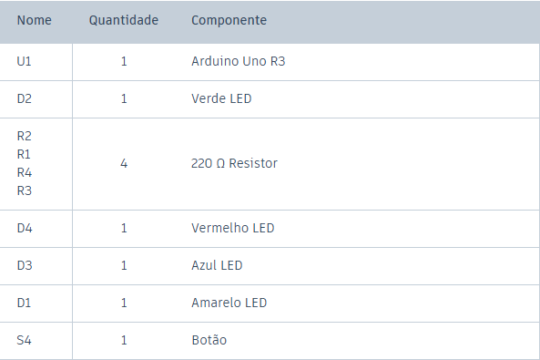
Diagrama elétrico:
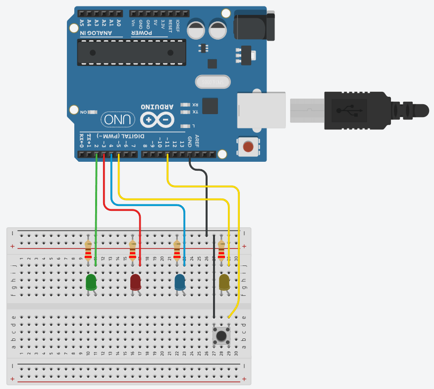
Código fonte:
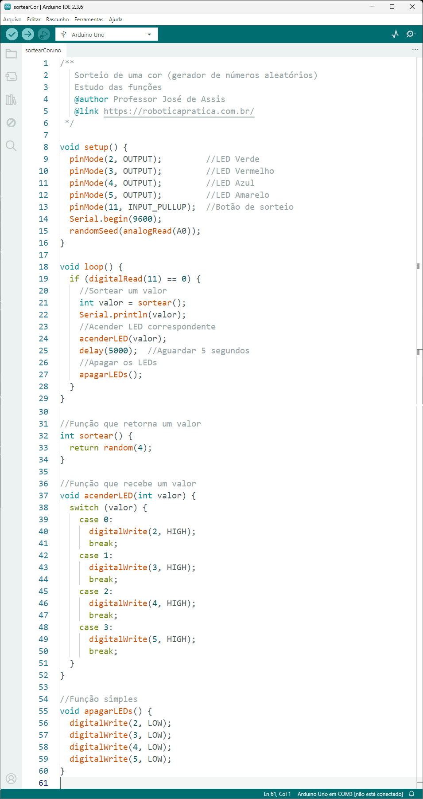
Missão 9 - Marcha Imperial
🛰️ Plano da missão
Nesta missão, o Arduino vai aprender a usar a Força... do som. Com a ajuda de um buzzer passivo, você vai descobrir como reproduzir notas musicais usando as funções especiais tone() e noTone().
Com isso, será possível montar um teclado musical e criar trilhas sonoras dignas de um verdadeiro Cavaleiro Jedi.
🔋 Componentes da missão
Buzzer
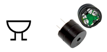
O buzzer passivo funciona como um pequeno alto-falante. Para tocar alguma coisa, o Arduino precisa mandar sinais com diferentes frequências. Assim conseguimos gerar sons variados.
🧠 Comando Central
Como o Arduino reproduz notas musicais?
Cada nota musical tem uma frequência associada. Por exemplo:
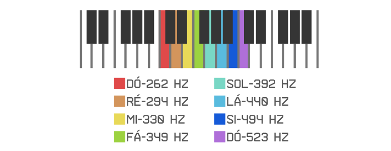
A função tone(pino, frequência) faz o Arduino ligar e desligar rapidamente um pino digital para gerar uma frequência (em Hertz). Essa frequência faz o buzzer vibrar e produzir um som, ou seja, uma nota musical.
A função noTone(pino) serve para parar o som que o Arduino está tocando naquele pino.
tone(6, 440); //toca a nota LÁ (440 Hz) no pino 6
delay(500); //duração da nota
noTone(6); //interromper o som no pino 6
🔧 Oficina da Rebelião
Objetivo: Desnvolver no Arduino um pininho musical luminoso.
Lista de material:
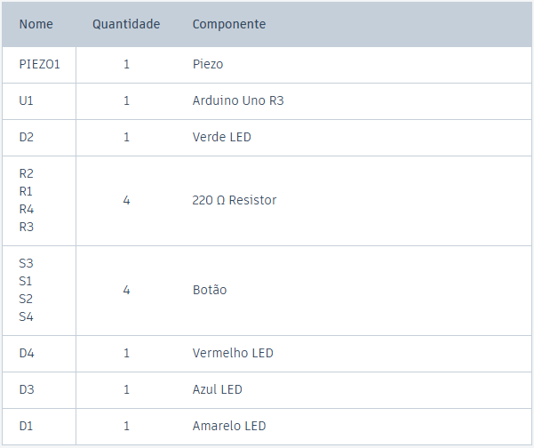
Diagrama elétrico:
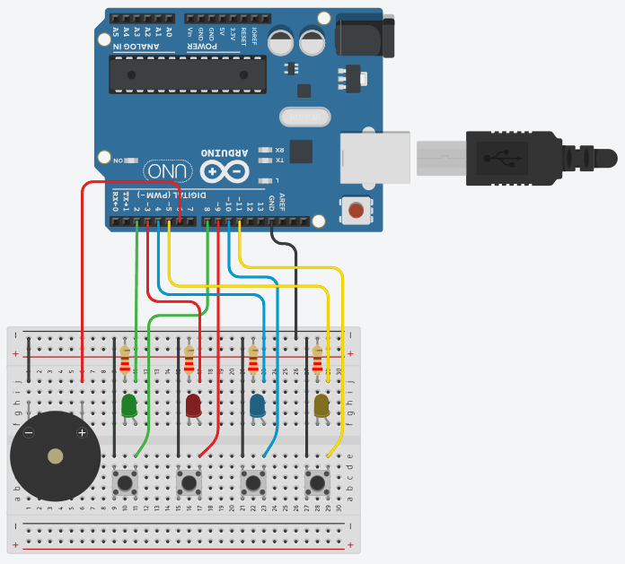
Código fonte:
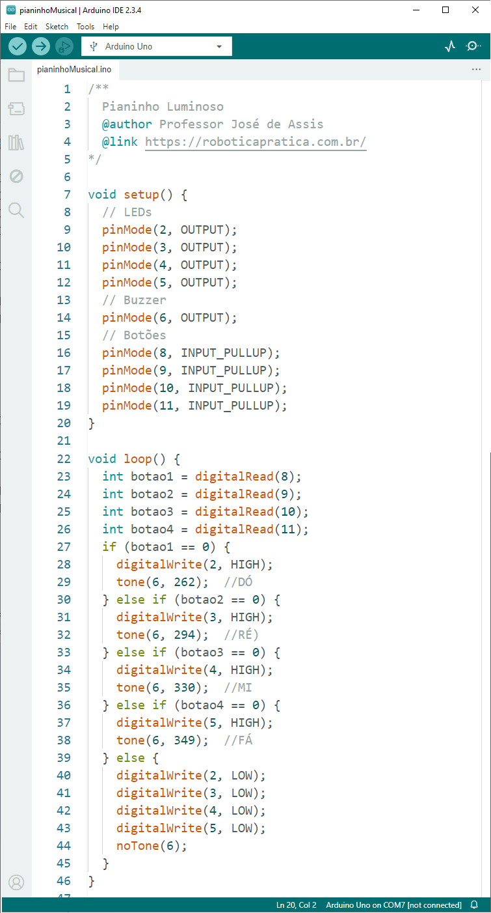
Missão 10 – Código Jedi: A Sequência da Estrela da Morte
🛰️ Plano da missão
Chegou a hora de testar não apenas sua lógica de programação, mas também sua memória digna de um verdadeiro Jedi!
Nesta missão final, você vai desenvolver um jogo baseado no clássico GENIUS da Estrela (ou SIMON, da Hasbro), onde o objetivo é reproduzir corretamente uma sequência de LEDs e sons que vai ficando cada vez mais difícil.
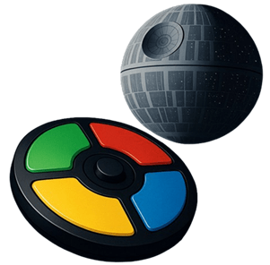
Mas esta não é uma simples brincadeira. Os planos da Aliança revelaram que, para acessar o núcleo do sistema da Estrela da Morte e desativar seu reator principal, é preciso decifrar uma sequência codificada de segurança inspirada no antigo jogo GENIUS. Somente quem dominar esse desafio será capaz de impedir a destruição de novos mundos.
O Arduino será o seu droide aliado, gerando combinações aleatórias de luzes e sons com LEDs, botões e buzzer. Sua missão é memorizar cada sequência e responder pressionando os botões na ordem correta. Errou? A Estrela da Morte reforça seus escudos. Acertou? Você se aproxima do núcleo. Complete todas as rodadas e a explosão final será inevitável.
É o seu teste final, jovem Padawan. Você tem a Força e agora também o código.
🔧 Oficina da Rebelião
Nesta oficina, você vai colocar à prova tudo o que aprendeu nesta série de missões. Prepare seu escudo Jedi de paciência e concentração, pois essa é uma batalha entre você e o código.
Objetivo: Criar um jogo da memória com Arduino inspirado no GENIUS/SIMON, utilizando 4 LEDs coloridos, 4 botões e 1 buzzer. O Arduino irá gerar uma sequência crescente e o jogador precisa repeti-la corretamente.
⚠️ Atenção, jovem Padawan!
Diferente das missões anteriores, todo o passo a passo desta missão está em vídeo! Desde a montagem na protoboard, passando pela lógica de funcionamento, até o código completo do jogo.
Assista à playlist exclusiva no canal do Professor José de Assis:
▶️ Assistir no YouTube
Essa playlist é o seu holocron de conhecimento. Use-a como guia para completar o desafio. Estude cada parte com atenção e prepare-se para testar seus reflexos e sua mente de programador Jedi.
Que o código esteja com você!
Nota: Os termos “Padawan”, “Jedi”, “Sabre de Luz”, “A Força” e outras expressões relacionadas ao universo Star Wars são utilizados neste conteúdo exclusivamente com propósito educacional e metafórico, como forma de tornar o aprendizado mais acessível e divertido. Este uso não implica qualquer vínculo, associação ou endosso por parte da franquia Star Wars, seus personagens, ou seus detentores legais de direitos autorais e marcas registradas.